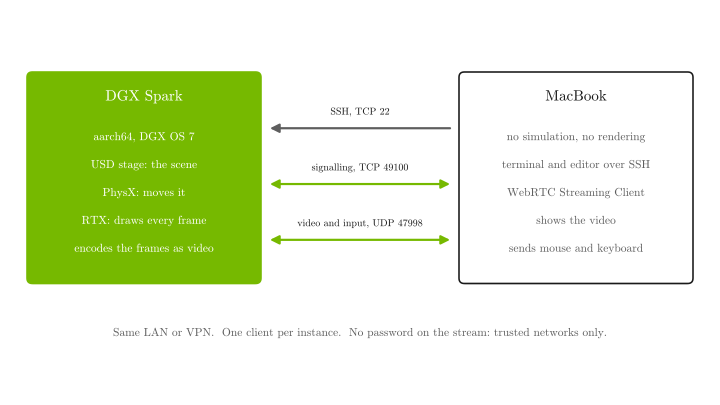
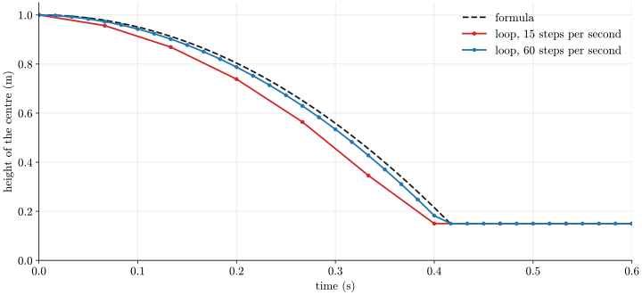

Isaac Sim on a DGX Spark#
Prerequisites#
Visualization in Python#
The folder of this notebook holds a small module, simscene, with the scenes of this course, two renderers and the charts. It needs NumPy and matplotlib only: every picture on this page is drawn by the notebook, not by Isaac Sim. Labels are set in Computer Modern through matplotlib’s mathtext, so no TeX installation is needed.
Utilizations#
The module is built from four small class families. Each has one method that its subclasses override, so one call, show(...), does the right thing for every member.
Base class |
Subclasses |
Overridden |
|
|---|---|---|---|
Picture |
|
|
|
Scene |
|
|
|
Renderer |
|
|
|
Chart |
|
|
|
A scene is a list of shapes and a camera. Both come from labs/scene.py, the file that the lab scripts read on the DGX Spark, so this page and the simulator are given the same scene. A new scene is a subclass of Scene with its own shapes; its first docstring line is its caption.
A 3D picture on this page can be turned. Drag it to turn the scene, Shift-drag to move it, click and then scroll to zoom, double-click to go back to the scene’s own camera. Where the page cannot run scripts, the same scene appears as a still picture.
What is Isaac Sim?#
Isaac Sim is a robot simulator: a physics engine, a renderer and sensor models that work on one shared scene.
The scene is a USD stage: a tree of typed prims with attributes.
On this page Isaac Sim runs on a DGX Spark, and a MacBook shows the picture.

DGX Spark |
MacBook |
|
|---|---|---|
Role |
simulates and renders every frame |
shows the picture, sends mouse and keyboard |
Processor |
aarch64, with an NVIDIA GPU |
Apple silicon or Intel |
Link |
TCP 49100 for signalling, UDP 47998 for video and input |
the Isaac Sim WebRTC Streaming Client |
Commands |
blocks marked |
blocks marked |
In nine small steps you install Isaac Sim on the Spark, put a cube on its stage, look at it from the MacBook, make it fall, check the fall against the formula, and read what the scene is made of. Every step is a command to type and a result to check. Allow about two hours, most of it waiting for the download.
Before You Start#
You need |
Details |
|
|---|---|---|
Spark |
a DGX Spark on your network |
DGX OS 7. It is the only aarch64 machine that Isaac Sim supports. |
Mac |
a MacBook |
Apple silicon or Intel. It never simulates or renders. |
Network |
both on the same LAN or VPN |
The stream uses UDP, which an SSH tunnel cannot carry. |
Files |
the folder |
The notebooks of this course, with |
Where to type. Each command block says where it is typed. # Mac is the Terminal of the MacBook, # Spark is a shell on the Spark, and # Spark (isaac) is a shell on the Spark with the isaac environment active.
What is folded. Commands to type are always visible. Longer listings and expected outputs are folded: click a line with a triangle to open it. The code that draws the pictures of this page is folded in the same way.
One look for every picture. The cube is not built inside the scripts. labs/scene.py says what is in the scene and labs/look.py says how it is drawn: the points, the triangles, the colours (with the shading already in them), the light and the camera. Every script takes --theme light (the default) or --theme dark for the background; use one theme throughout. This page uses light.
Two ways to install. The page IsaacSim101 of this course builds Isaac Sim from source and connects an editor. This page takes the Python package instead, which needs no compiler, and goes on to a first scene. If your Spark already has a build from source, read the last section of this page first.
Setup#
Reach the Spark from the Mac#
Create an SSH key if you do not have one, and copy it to the Spark.
# Mac ls ~/.ssh/id_ed25519.pub || ssh-keygen -t ed25519 ssh-copy-id <user>@<spark-ip>
Give the Spark a short name. Add this to
~/.ssh/configon the Mac:Host spark HostName <spark-ip> User <user>Test it. You should get a prompt on the Spark without typing a password.
# Mac ssh spark
Check the Spark#
Run these on the Spark and compare with the comments.
# Spark
uname -m # aarch64
ldd --version | head -1 # GLIBC 2.35 or newer (pip needs it)
nvidia-smi --query-gpu=name,driver_version --format=csv
df -h ~ # free space in your home folder
The Isaac Sim documentation lists driver 580.159.03 on DGX OS 7 as the tested configuration. The packages are large; NVIDIA’s DGX Spark playbook asks for 50 GB free for a source build, and the same margin is sensible here.
Install conda on the Spark#
Miniforge is a small conda installer that uses the conda-forge channel and has an aarch64 build.
# Spark
curl -L -O https://github.com/conda-forge/miniforge/releases/latest/download/Miniforge3-Linux-aarch64.sh
bash Miniforge3-Linux-aarch64.sh -b -p $HOME/miniforge3
$HOME/miniforge3/bin/conda init bash
exec bash
conda --version
Put the Lab Files on the Spark#
# Mac, from the folder that contains ivcl/
ssh spark mkdir -p ivcl/courses/sim
rsync -av ivcl/courses/sim/ spark:ivcl/courses/sim/
# Spark
cd ~/ivcl/courses/sim
ls # env labs simscene.py and the notebooks
Stay in this folder. Every command below is run from here, and every script writes into out/ next to labs/. If your connection is unreliable, start tmux first so a dropped connection does not kill a running job.
The Nine Steps#
Step |
You run |
You check |
|
|---|---|---|---|
1 |
Create the environment |
|
the size of what was installed |
2 |
Check that it works |
|
|
3 |
Put a cube on the stage |
|
the prim tree, and |
4 |
See it from the MacBook |
|
the viewport on the Mac, and |
5 |
Make the cube fall |
|
a final height close to 0.15 m |
6 |
Check the fall against the formula |
|
the impact time against 0.4163 s |
7 |
Look inside the stage |
|
the schemas before and after physics |
8 |
Change it while it is running |
the streaming client |
a red cube that falls on Play |
9 |
Shut down cleanly |
|
no Python process remains |
Step 1: Create the Environment#
Create the environment. The file only prepares Python 3.12 and a recent C++ runtime.
# Spark conda env create -f env/isaac.yml conda activate isaac
Listing: env/isaac.yml
name: isaac channels: - conda-forge dependencies: - python=3.12 # Isaac Sim 6.2 requires Python 3.12 - pip - libstdcxx-ng>=13 # Isaac Sim docs: conda needs CXXABI_1.3.15
Install PyTorch and Isaac Sim with pip. These are the commands from the Isaac Sim documentation, with the CUDA 13 build of PyTorch that the Spark needs.
# Spark (isaac) pip install --upgrade pip pip install torch==2.11.0 --index-url https://download.pytorch.org/whl/cu130 pip install "isaacsim[all,extscache]==6.2.0.0" --extra-index-url https://pypi.nvidia.com
Set two variables that apply only inside this environment, then re-activate it.
# Spark (isaac) conda env config vars set \ OMNI_KIT_ACCEPT_EULA=YES \ LD_PRELOAD=/lib/aarch64-linux-gnu/libgomp.so.1 conda deactivate && conda activate isaac
OMNI_KIT_ACCEPT_EULA=YESmeans you accept the NVIDIA Omniverse License Agreement. Read it first (link in Sources); if you leave the variable out, Isaac Sim asks you the first time it starts.LD_PRELOADis specific to the Spark: without it some Isaac Sim modules fail to load with alibgomperror.Measure what you got, and write the two numbers down.
# Spark (isaac) du -sh $CONDA_PREFIX pip list | wc -l
Step 2: Check That It Works#
# Spark (isaac)
pip show isaacsim | sed -n 1,2p
python -c "import isaacsim; print('import ok')"
You should see Version: 6.2.0.0 and then import ok. If Isaac Sim prints an instruction about preloading libgomp, the LD_PRELOAD variable from Step 1 is not active: run conda deactivate && conda activate isaac and try again.
Step 3: Put a Cube on the Stage#
The scene is a 0.3 m cube whose centre is 1 m above a 3 m square of ground.
![A cube above the ground]()
In the picture |
On the stage |
|
|---|---|---|
Cube |
green, edge 0.3 m, centre 1 m above the ground |
|
Ground |
grey, 3 m on a side, at height \(z = 0\) |
|
Camera |
the view of this picture, \(45^\circ\) high |
|
Light |
even, from all sides |
|
The picture is a preview of out/hello_cube.usda, the scene this step saves. Step 4 makes the real picture.
Read the scene. It is the whole of
labs/scene.py.Listing: labs/scene.py
import look SIZE = 0.3 # cube edge, metres START = (0.0, 0.0, 1.0) # cube centre at the start, metres VIEW = look.View(eye=(2.2, -2.7, 1.9), target=(0.0, 0.0, 0.5)) def build(centre=START): """A 3 m square of ground and a green cube above it.""" return [look.ground(half=1.5), look.box("cube", centre, SIZE, look.GREEN_RGB)]
look.box()turns “a box of this size here” into 8 points and 12 triangles and gives each triangle its shaded colour.look.Viewis the camera: where the eye is and what it looks at, in metres.Read the script. An Isaac Sim script always starts the application first and imports the rest afterwards. Then it makes an empty stage and writes the scene onto it.
Listing: labs/s3_hello_cube.py, the two parts that matter
from isaacsim import SimulationApp # Start the simulator first. Every other isaacsim / pxr import # must come after this line. app = SimulationApp({"headless": True})
import isaacsim.core.experimental.utils.stage as stage_utils stage_utils.create_new_stage() stage = stage_utils.get_current_stage() prims = scene.build() # ground + cube, from scene.py look.usd_scene(stage, prims, scene.VIEW, THEME)
Run it.
# Spark (isaac) python labs/s3_hello_cube.py
The first start takes several minutes while Isaac Sim caches extensions and shaders. The script prints the stage as a tree: under
Worldyou should findLookwithground,cubeand aMattematerial, thenCameraandDome. The last line iswrotefollowed by the path ofout/hello_cube.usda.Open the file it saved. It is text.
# Spark grep -n "def " out/hello_cube.usda less out/hello_cube.usda
Find
def Mesh "cube"and, under it,points(8 of them) andfaceVertexIndices(12 triangles).
How the look is fixed. Four things are decided in labs/look.py, not by the renderer. Open the file and find each function; each is a few lines.
Where |
How |
|
|---|---|---|
Camera |
|
A USD camera at |
Coordinates |
|
Metres, with Z up and the ground at height \(z = 0\) in every scene. |
Colour |
|
Colours are defined as screen colours. USD stores colours in linear light, so they are converted on the way in. |
Shading |
|
The brightness of every face is computed from one light direction and stored in the face’s colour. The material is matte and the light is an even dome, so the renderer should add nothing. |
The same rules as formulas. A face with unit normal \(\mathbf{n}\) and colour \(\mathbf{c}\) is stored in the colour
where \(\boldsymbol{\ell}\) is the unit vector towards the light. Each screen colour value \(c\) between 0 and 1 is converted to linear light for USD:
The focal length \(f\) of the camera follows from the field of view \(\theta = 45^\circ\) and the vertical aperture \(h = 20.25\) mm:
Step 4: See It from the MacBook#
Part A: stream the live application.
Find the Spark’s address, then start a streaming session that opens your scene.
# Spark (isaac) hostname -I | awk '{print $1}' python labs/s4_stream.py out/hello_cube.usda
The script is NVIDIA’s
livestream.pyexample plus two things: it opens your file, and it looks through the scene’s camera.Listing: labs/s4_stream.py, the configuration and the stream
CONFIG = { "headless": True, # no window on the Spark itself "hide_ui": False, # but keep the full GUI in the stream "width": look.WIDTH, "height": look.HEIGHT, "window_width": 1920, "window_height": 1080, "renderer": "RealTimePathTracing", "display_options": 3286, # show the default grid "open_usd": usd, } app = SimulationApp(launch_config=CONFIG)
enable_extension("omni.kit.livestream.app") # WebRTC server for _ in range(10): app.update() stage = stage_utils.get_current_stage() if stage.GetPrimAtPath("/World/Camera"): ViewportManager.set_camera("/World/Camera") # the scene's camera print("Streaming. Signal port TCP 49100, media port UDP 47998.")
Wait until the script prints
Streaming.and the log stops scrolling. In a second Spark terminal, confirm that both ports are open.# Spark, second terminal ss -ltn | grep 49100 # TCP, signalling ss -lun | grep 47998 # UDP, video
On the Mac, download the Isaac Sim WebRTC Streaming Client for macOS from the Latest Release section of the Isaac Sim download page, open it, type the Spark’s address in place of
127.0.0.1, and click Connect.The full Isaac Sim interface appears with your cube in the viewport, seen from the scene’s camera. Hold Alt and drag to orbit.
Experiment. Press Ctrl-C in the first Spark terminal. The picture on the Mac stops. Start the script again and reconnect.
Part B: save one frame as a file.
Stop the stream (Ctrl-C), then capture what the scene’s camera sees.
# Spark (isaac) python labs/s4_shot.py out/hello_cube.usda out/hello_cube.png
The script attaches an RTX camera sensor to
/World/Camera, waits for the renderer to settle and saves 1280 by 720 pixels. If Pillow is not installed in the environment, it saves the pixels asout/hello_cube.png.npyinstead;pip install pillowfixes that.Copy the picture to the Mac and compare it with the preview in Step 3.
# Mac scp spark:ivcl/courses/sim/out/hello_cube.png . open hello_cube.png
The cube and the ground should sit where they do in the preview. If your picture is brighter or darker overall, change
DOME_INTENSITYinlabs/look.pyand run Step 3 and step 6 again. If its colours are more contrasty, the renderer is applying a film-like tone curve: in the streamed window open Render Settings > Post Processing > Tone Mapping and choose a linear operator. These two adjustments could not be tested while writing this page.
Step 5: Make the Cube Fall#
You do not program the fall. You say which prim is a rigid body and which prims collide, and step the physics engine.
Read the four lines that declare the physics, and the loop.
SimulationManager.step()advances the physics by one time step without rendering.Listing: labs/s5_falling_cube.py, the declaration and the loop
paths = look.usd_scene(stage, scene.build(), scene.VIEW, THEME) # Physics is declared, not programmed: body = RigidPrim(paths["cube"]) # mass, gravity shape = GeomPrim(paths["cube"], apply_collision_apis=True) shape.set_collision_approximations("convexHull") # cube collides GeomPrim(paths["ground"], apply_collision_apis=True) # ground too
SimulationManager.set_physics_dt(DT) # set before pressing play app_utils.play() app.update()
for _ in range(STEPS): SimulationManager.step() # one physics step, no render pos, _ = body.get_world_poses() rows.append((SimulationManager.get_simulation_time(), float(pos.numpy()[0, 2])))
Run it.
# Spark (isaac) python labs/s5_falling_cube.py
The script prints the number of steps and the time step it measured (it should be \(1/60 = 0.0167\) s), then the first and the final height of the cube. The final height should be close to 0.15 m: the cube resting on the ground. It writes
out/fall.csvandout/falling_cube.usda.Watch it. Stream the saved scene and press Play in the toolbar on the left.
# Spark (isaac) python labs/s4_stream.py out/falling_cube.usda
The expected end of the fall:
![The cube at rest on the ground]()
Value |
Where it comes from |
|
|---|---|---|
Start |
centre at \(z_0 = 1\) m |
|
End |
centre at \(s/2 = 0.15\) m |
half the edge \(s = 0.3\) m above the ground |
Time step |
\(\Delta t = 1/60\) s |
|
Duration |
120 steps, 2 s |
|
Step 6: Check the Fall Against the Formula#
Without air, a cube with edge \(s\) that is dropped from height \(z_0\) falls freely until its centre is half an edge above the ground:
With \(z_0 = 1\) m, \(s = 0.3\) m and \(g = 9.81\ \text{m/s}^2\) the impact time is \(t_{\text{impact}} = 0.4163\) s.

Curve |
Height of the centre while falling |
|
|---|---|---|
Formula |
dashed |
\(z_0 - \tfrac{1}{2}\,g\,t^2\) |
Loop, 60 steps per second |
blue |
below the formula by \(\tfrac{1}{2}\,g\,t\,\Delta t\) with \(\Delta t = 1/60\) s, about 3 cm just before impact |
Loop, 15 steps per second |
red |
the same gap with \(\Delta t = 1/15\) s, four times as large |
The two loops in the chart are a stand-in written in NumPy, not Isaac Sim’s physics engine. They show what a first-order integrator does. The steps below find out what your simulation did.
Read the check. It is plain NumPy and does not start the simulator.
Listing: labs/s6_check_fall.py, the comparison
exact = np.maximum(Z0 - 0.5 * G * t**2, HALF) t_exact = np.sqrt(2 * (Z0 - HALF) / G) landed = t[z <= HALF + 1e-3] # within 1 mm of rest falling = t < t_exact - 0.02 # samples before impact dts = np.diff(t)
Run it.
# Spark (isaac) python labs/s6_check_fall.py
It prints six lines: the number of samples; the mean, smallest and largest time step in the file; the impact time from the formula, which is 0.4163 s; the impact time in your simulation; the largest gap between simulation and formula while the cube is still falling; and the rest height.
Answer these from your own output.
Is the mean time step exactly \(\Delta t = 1/60\) s? Are the smallest and the largest the same?
Is the largest gap closer to a millimetre or to several centimetres? Compare it with the blue curve of the chart. What does your number suggest about the engine’s integrator?
Does the cube come to rest at exactly 0.150 m? What could account for a small difference?
Step 7: Look Inside the Stage#
# Spark (isaac)
python labs/s7_inspect.py
The script opens out/hello_cube.usda and prints, in this order:
the prim tree;
the type of
/World/Look/cube, which isMesh;the schemas applied to the cube before any physics;
every attribute on the cube:
points,faceVertexCounts,faceVertexIndices, the display colour, the transform that places it;the schemas applied after
RigidPrim(...)andGeomPrim(..., apply_collision_apis=True): the list has grown by rigid-body and collision schemas;whether any attribute now mentions physics:
True.
Listing: labs/s7_inspect.py, where physics is added
# Physics is extra data attached to the same prim.
RigidPrim("/World/Look/cube")
GeomPrim("/World/Look/cube", apply_collision_apis=True)
print("applied schemas after: ", list(cube.GetAppliedSchemas()))
Step 8: Change It While It Is Running#
Change the scene: in
labs/scene.pyreplacelook.GREEN_RGBwith(0.86, 0.08, 0.24). Run Step 3 again, then stream the new file.# Spark (isaac) python labs/s3_hello_cube.py python labs/s4_stream.py out/hello_cube.usda
Connect the client on the Mac. The cube is red.
In the Stage panel on the right, open
World > Lookand clickcube.Press W and drag an arrow to move the cube. Press E to rotate it, R to scale it.
In the Property panel, click Add > Physics > Rigid Body with Colliders Preset. Do the same for
ground, choosing Colliders Preset.Press Play on the left toolbar. The cube falls from where you put it. Press Stop and it returns to where you left it.
Put
look.GREEN_RGBback inlabs/scene.py.
The scene after the first of these steps:
![The cube after the change of Step 8]()
Before |
After |
|
|---|---|---|
Line in |
|
|
Points and triangles |
8 and 12 |
unchanged |
Colour of each face |
green, with its shading |
red, with the same shading |
Step 9: Shut Down Cleanly#
In the streamed window choose File > Exit, then close the client on the Mac. If the script is still running, press Ctrl-C in its terminal.
# Spark
conda deactivate
nvidia-smi # no python process should remain
What You Just Saw#
Answer for Isaac Sim |
|
|---|---|
Where is the picture drawn? |
On the Spark’s GPU |
What travels over the network? |
Video, every frame; your input, back |
Does an SSH tunnel work? |
No: the video is UDP |
How many viewers? |
One client per instance |
Who computes motion? |
The physics engine |
What is a scene? |
A USD stage: prims and attributes |
What does a cube know? |
Its points and triangles, and after Step 5 its mass, velocity and collision shape |
Where does the scene come from? |
|
What does it cost? |
Your two numbers from Step 1 |
Best for |
Anything that moves, collides or is sensed |
Troubleshooting#
What to do |
|
|---|---|
|
Run |
pip cannot find |
Check that |
Error mentioning |
The |
Error mentioning |
The C++ runtime is too old. Run |
Asked to accept a licence at every start |
|
A script stops at an import |
Module names under |
Client cannot connect |
Check both ports with |
Client shows a black window |
Isaac Sim is still loading. Wait a minute and reconnect. |
The picture is too bright or too dark |
Change |
The cube falls through the ground |
The ground needs a collider too: check the line |
Checklist#
You are ready for the next page, Overview of Visualization, when you can tick every line.
conda env liston the Spark showsisaac, andpip show isaacsimreports 6.2.0.0.out/containshello_cube.usda,hello_cube.png,falling_cube.usdaandfall.csv.You have seen the Isaac Sim viewport on the Mac and made the cube fall with Play.
Your
hello_cube.pngshows the same view as the preview in Step 3.You can say what
labs/s6_check_fall.pyreported for the impact time and the rest height.You can say, in one sentence, where the pixels are drawn and what travels over the network.
If You Built Isaac Sim from Source#
NVIDIA’s DGX Spark playbook builds Isaac Sim from the GitHub repository instead of installing it with pip, and so does the page IsaacSim101. If your Spark was set up that way, everything above still applies with one change: run scripts with the build’s own Python instead of the isaac environment’s.
# Spark
export ISAACSIM_PATH=$HOME/IsaacSim/_build/linux-aarch64/release
export LD_PRELOAD="$LD_PRELOAD:/lib/aarch64-linux-gnu/libgomp.so.1"
$ISAACSIM_PATH/python.sh labs/s3_hello_cube.py
The source build needs GCC/G++ 11, Git LFS and about 50 GB of disk; the playbook in Sources has the full steps. The Isaac Sim documentation also describes a browser-based viewer, deployed with Docker Compose on the Spark, as an alternative to the native streaming client.